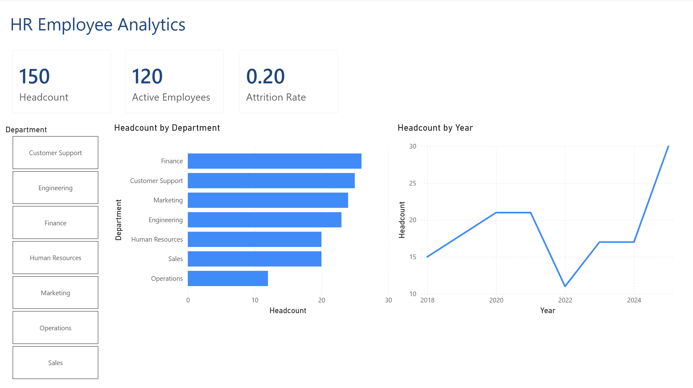

Static screenshot of a Power BI dashboard.
With a dummy .xlsx data, I performed data cleaning in Microsoft Excel. Using TRIM, PROPER, and conditional logic to standardize text fields and fill gaps, then further validate data types via Power Query. With a clean and validated data, then presented into a dashboard using Power BI.